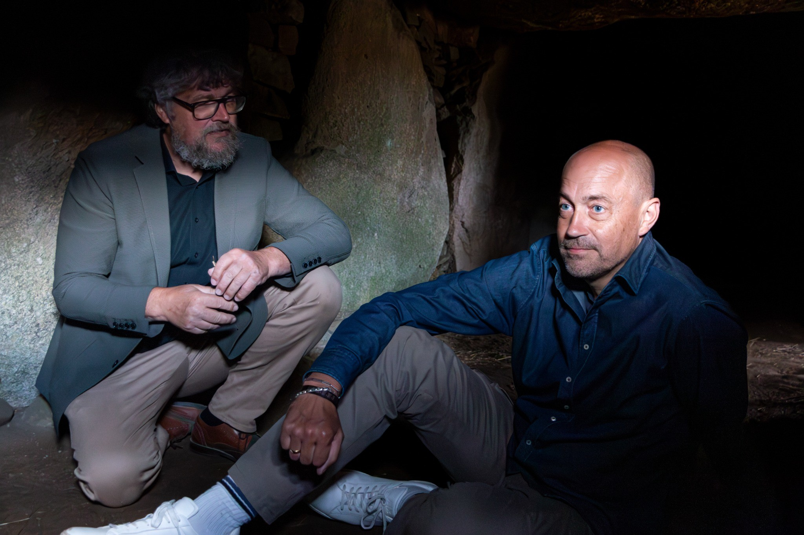

Palle Nevad Frandsen
Lokaljournalist med hjertet plantet på Lolland – med fokus på kultur, lokalpolitik, menneskefortællinger og den gode historie, der binder os sammen.
“Jeg tror på, at de bedste historier får os til at se verden fra nye vinkler.”

Oplæg og fortællende foredrag
Jeg holder oplæg og fortællende foredrag om de historier, der binder os sammen – i kulturen, i politikken og i hverdagen.
Kulturen skaber fællesskab
Hvordan musik, teater, litteratur og lokale initiativer ikke bare underholder – men samler mennesker på tværs af alder, baggrund og holdninger.
Lokalpolitik gennem journalistens øjne
Indblik i kommunalpolitikens maskinrum – hvor mennesker, magt og værdier mødes, og beslutninger får helt konkrete konsekvenser i hverdagen.
Filippinerne – et sydøstasiatisk paradis set gennem en danskers øjne
Fortællinger fra et land fuld af kontraster, hvor varme, fællesskab og tro spiller en central rolle i hverdagen. Et personligt blik på kulturmøder, livsglæde og det menneskelige i globaliseringens tid.
Nedslag i historierne
Et lille udvalg af artikler – resten finder du på undersiden.
Unges trivsel set tæt på – hvad fylder mest, og hvorfor?
Læs artiklenArbejdsglæde, ansvar og et højt skridttal i hverdagen.
Læs artiklenMennesker, mudder og mening
Jeg har i mere end 20 år arbejdet med journalistik, der tager udgangspunkt i mennesker og fællesskab. For mig handler den gode historie om at forstå – ikke fordømme. Om at give stemme til de erfaringer, der ofte bliver overset.
På undersiden deler jeg nedslag fra arbejdslivet – fra stormfloder, reportage-mudder og hårde retssager til de små historier, der samler et lokalsamfund.
Mennesket bag journalistikken
Gift med Maricel og far til Steven. Vild med fodbold, teater og musik – og engageret i lokale kulturliv og foreningsliv, blandt andet som medskaber af koncerter på egnsteatret og i en filippinsk-dansk venskabsforening.
På undersiden kan du læse lidt mere om hverdagen, interesserne og det, der fylder udenfor spalterne – men som alligevel farver mit blik på verden.
Jeg vil gerne høre fra dig
📍Østre Boulevard 23, 4930 Maribo
Send mig en besked
Skriv et par linjer om, hvad du har i tankerne – så vender jeg tilbage hurtigst muligt.
Du kan også skrive direkte på palle.frandsen@gmail.com.